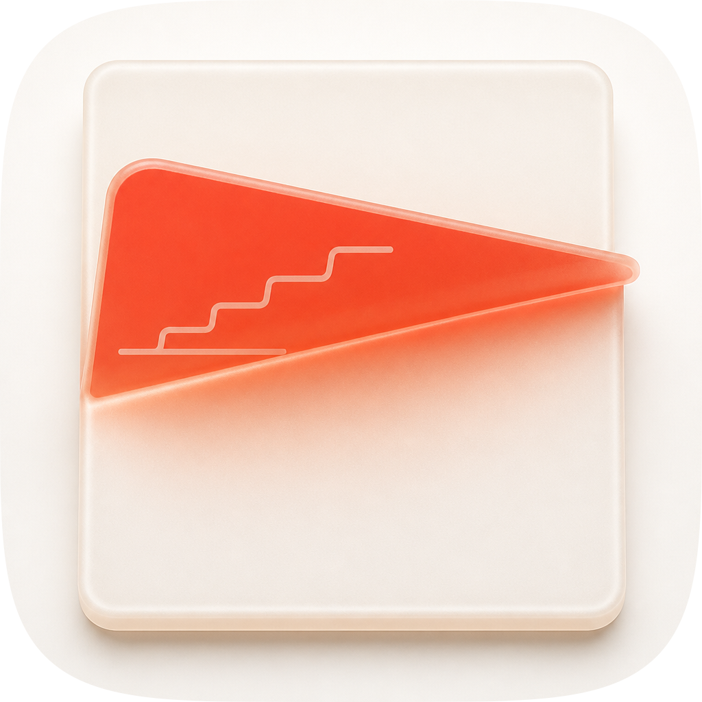

| Take | Hero at 1024, then renders at 128 / 64 / 48 / 32 / 16 css px (2× retina sources), plus the 16px squint magnified | Rubric | Verdict |
|---|---|---|---|
| A-r11 · icon.svgEngine A, hand-authored layered SVG, SHIPS | 11 / 12 | A porcelain sheet 580×665 (56.6% of tile width, inside the 55–65% band) caught mid-fold on a porcelain cushion, the crease running 46° from the bottom edge to the right edge so the flap is a third of the sheet — a fold, not the legacy-era page curl. The inner face is vermilion and carries a stepped chart rule, so the icon shows evidence held inside the page. Checks 1–4 pass on real renders: full-bleed 1024 with the set's exact superellipse as a clip, sheet centred at (510, 512) with 220/224/180/179 margins, and at 16px the diagonal survives as a clean vermilion wedge. Four layers #bg/#mid/#fg/#highlight map 1:1 onto Icon Composer. Sole deduction on #7: see the recommendation. |
|
| A-r07 · candidate-r07.svgEngine A, the take the degraded metric shipped | 10 / 12 | Same composition, three material rounds further on — and measurably worse for them. Re-scored at full tier it is the weakest of the eight archived candidates on 1024 LPIPS (0.4883) and the weakest on absolute self-contrast at every size (0.4447 at 1024 against r11's 0.4748). Two independent blind judges, shown it against r11 without labels, named the same defect: a pure-white hairline specular along the crease reading as “a gloss decal rather than volume”. Loses on #9 era coherence (Tahoe grammar sanctions one soft light and zero hard speculars) and on the flattened accent ramp. | |
| A-r00 · candidate-r00.svgEngine A, first material rebuild | 10 / 12 | The loop's starting state, kept on the sheet because the full-tier replay makes it the honest yardstick: at 1024 it already scored 0.5233 composite / 0.4730 LPIPS, and eight rounds of work on a broken instrument ended below it. Its crease carries no occlusion at all — the two AO bands were authored on the wrong side of the fold and clipped away by flapClip for the whole run — so the V does not close and the flap reads as a printed triangle rather than a lifted plane. Loses on #8 depth coherence. |
|
| B · icon-engineB-arrow-ecc20a.svgEngine B, Arrow 1.1 vector take | 5 / 12 | Hard-fails three of the four non-negotiables. #1: a square card with baked square corners and a baked drop shadow, floating on transparency — no squircle discipline at all. #2: the card is offset down-right with no safe zone. #4: the vermilion resolves to a needle whose tip is sub-pixel by 32px and gone by 16px. It also lost the brief entirely — the double-curved sliver reads as a swallow or a paper dart, not a fold, and the inner face carries no chart rule, so the signature move is absent. Its one contribution: it independently reached a ~45° diagonal as the axis, which corroborated the crease angle. | |
| C1 · icon-engineC-c57a8cEngine C raster, GPT Image 2, material reference | 6 / 12 | Won the material read and is the reference the blind panel judged against — genuinely volumetric frosted gel, a thick translucent edge, a real contact shadow, and the accent visible through the underside. It ships nothing. #1: a freestanding object on white with a 174px top margin, so masking it to the squircle just crops a photograph — the tile is not a cushion, it is a backdrop. #10: a flat pre-masked raster, the corpus's named 76% failure. And it lost the subject: the form reads as a tilted cone or a paper cup, not a folded sheet, which one judge noted unprompted. | |
| C2 · icon-engineC2-597699Engine C raster, second take, fidelity reference |  |
6 / 12 | Carried as the fidelity loop's reference because it shares the master's frontal-card geometry, so the residual isolates material instead of arguing about pose. As artwork it fails the same way C1 does — an inset card on a white backdrop, #1 and #10 — and it fails one more: its flap is flat, a printed triangle with no occlusion where the V closes. That flatness is why the gate rejected the round that finally gave the master a real crease shadow, and why 20% of the composite (edge F1, 0.057 at 1024) was never winnable: the reference's card edges are 120px inside the master's full-bleed sheet. |
Rounds r00–r07 were scored on numpy (no torch: luminance+ssim+edges only). With torch 2.13.0 + lpips installed, all eight archived candidates were re-scored at full (lpips) against both rasters. The two references agree independently, which is what makes the finding trustworthy: the run went backwards, and the take it shipped was its worst.
| Round | 1024 composite | 1024 LPIPS ↓ | vs C1 LPIPS ↓ | 1024 self-contrast | Recorded verdict |
|---|---|---|---|---|---|
| r00 | 0.5233 | 0.4730 | 0.4045 | — | baseline |
| r01 | 0.5244 | 0.4722 | 0.4033 | — | ACCEPT |
| r02 | 0.5234 | 0.4705 | 0.3939 | 0.4620 | REJECT |
| r03 | 0.5239 | 0.4705 | 0.3946 | — | REJECT |
| r04 | 0.5245 | 0.4702 | 0.3965 | 0.4715 | REJECT, kept |
| r05 | 0.5181 | 0.4852 | 0.4108 | — | REJECT, kept |
| r06 | 0.5181 | 0.4852 | 0.4107 | — | ACCEPT |
| r07 | 0.5130 | 0.4883 | 0.4115 | 0.4447 | SHIPPED |
| r09 | 0.5131 | 0.4883 | — | 0.4748 | ACCEPT (ramp) |
| r10 | 0.5196 | 0.4735 | 0.3982 | 0.4748 | ACCEPT (shadow) |
| r11 | 0.5197 | 0.4746 | 0.3992 | 0.4748 | ACCEPT, SHIPS |
The decomposition that closed it, each step measured on its own: reverting the gel ramp moved 1024 LPIPS by 0.0000 but recovered +0.030 of absolute self-contrast; reverting the r05 contact-shadow round moved LPIPS −0.0148, which was the whole regression; deleting the crease AO entirely bought a further −0.0035 and was declined, because that shadow is the fold's volume and the reference it would be converging on has a flat flap. The AO was probed absent before being kept — the loop's r03 lesson, applied deliberately.
Two rounds, judges shown only anonymised renders against the C1 reference, order reseeded per round. r10 vs r07: 2 judges ran, both preferred r07 on overall and material, tie on silhouette and small-size — and both independently named the same defect in r10, a “tighter diagonal specular… more like a gloss streak than volume”. That defect was a pure #FFFFFF hairline at 0.55 opacity along the crease spine, a hard specular in a scene where nothing emits white light. r11 warmed it to the measured rim scatter (#FFE7D6), halved it to 0.30, widened it and pushed it through a softer blur. r11 vs r07: the panel reversed 2–0 for r11 on both overall and material (tie on silhouette and small-size), and both judges independently cited the exact edit — “less hard-edged specular streak on the orange face” (claude) and “highlight falloff… gentler and less pin-sharp… nearer the REFERENCE's frosted translucency” (cursor/grok). A 2–0 loss turned into a 2–0 win on one parameter change that the composite scored as noise (+0.0011 LPIPS): the fix was confirmed by the same instrument that found the fault. The OpenAI judge failed to run in both rounds (no OPENAI_API_KEY); recorded, not silently dropped, so both tallies rest on two judges rather than three.
icon.svg), 11/12.
It is the only take that satisfies the house rule and the direction at once: full-bleed on the set's exact superellipse, porcelain register, one vermilion family reserved for the focal, and genuine dimensional form. It beats the previously-shipped r07 on 1024 composite (+0.0067), on LPIPS against both rasters, on absolute self-contrast at every size, and on the blind panel.
Known liabilities, named. #7 figure-ground is the deduction: the vermilion inner face measures 1.72:1 against the tile ground and 1.71:1 against the page face — well under the rubric's 3:1, in the same band as the corpus's cited waterlemon failure at 1.4:1. Grayscale hierarchy does hold, and that matters: desaturated, the accent resolves darker than everything around it, so the focal stays the darkest element rather than inverting. The porcelain sheet itself is the weaker half — page against tile is 1.01:1, so in grayscale the sheet is carried entirely by its edge crest and contact shadow. That is inherent to a white sheet on a porcelain ground and is the price of the register, not a defect that a value edit fixes without abandoning the direction. #3 passes but weakly: the flap folds inward, so the filled-black silhouette is a plain rounded rectangle — nameable as a sheet of paper, but the fold, the whole signature, is invisible in outline and rides entirely on value and hue. At 16px the stepped chart rule is gone, as designed; the diagonal is what survives. Structurally, 20% of the composite was never available: edge F1 sits at 0.057 at 1024 because the reference is an inset card on a backdrop and the master is full-bleed. That gap should not be chased — closing it means shrinking the artwork off the shelf.